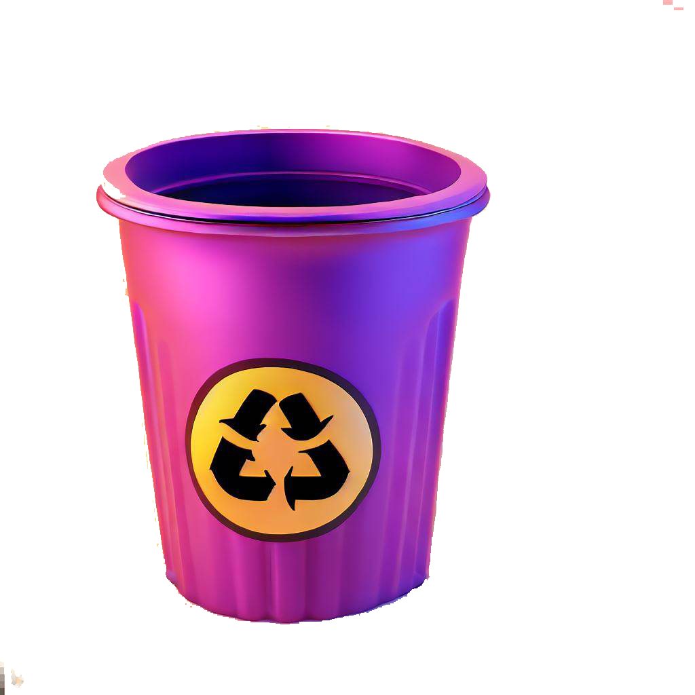
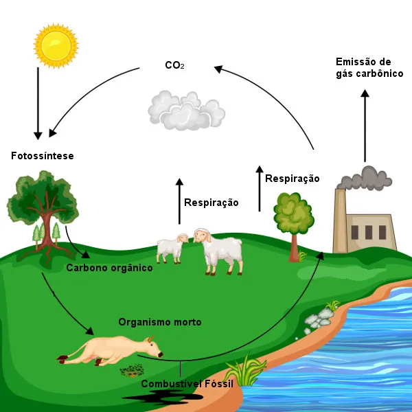
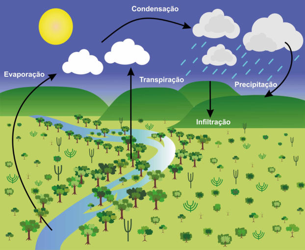
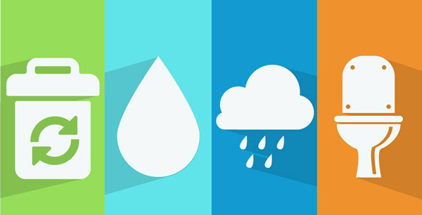
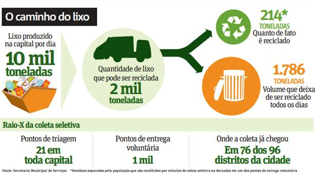

Qual a importância em reciclar?

A reciclagem é uma prática contínua de coleta e processamento de resíduos para transformá-los em novos produtos, evitando que sejam descartados como lixo. Ela ajuda a conservar recursos naturais, reduzir a extração de matérias-primas, economizar energia e diminuir custos com limpeza urbana. Além disso, a reciclagem evita a poluição, reduz as emissões de gases de efeito estufa e preserva o meio ambiente para as gerações futuras. É uma maneira eficaz de combater a degradação ambiental e construir um futuro mais sustentável.
Como Funciona a Coleta Seletiva?
Na coleta seletiva, os resíduos são separados previamente de acordo com sua origem e natureza. Cada tipo de material recebe uma cor específica, como vidro, plástico, metal ou papel. É possível separar todo o lixo descartado por empresas, escolas e residências. Os resíduos orgânicos, compostos por restos de frutas, verduras e alimentos não aproveitáveis são classificados separadamente, uma vez que não podem ser reaproveitados.
A Importância das Cores na Coleta Seletiva

Nos recipientes verdes, devem ser descartados vidros, como garrafas, potes de alimentos, perfumes, frascos de remédios, e entre outros. O vidro é um material altamente reciclável e pode ser reutilizado várias vezes pela sociedade.
Os recipientes vermelhos são destinados aos plásticos, como garrafas PET (utilizadas em refrigerantes), tampas, embalagens, sacos de lixo, entre outros. Os metais, como latas de aço e alumínio, devem ser colocados nas lixeiras amarelas. Por fim, os papéis e papelões devem ser depositados nas lixeiras azuis.
Além dessas lixeiras principais, também existem outras que podem ser sinalizadas para receber resíduos específicos. Por exemplo, a lixeira marrom é destinada aos resíduos orgânicos, o recipiente preto é para madeira, o roxo é reservado para resíduos radioativos, o laranja para resíduos perigosos, o branco para resíduos ambulatoriais ou lixo hospitalar, e o cinza para resíduos contaminados.
Materiais Contaminados
É importante destacar a importância da lixeira roxa e o seu significado. A lixeira roxa é designada para resíduos radioativos, que são materiais com níveis de radiação prejudiciais à saúde e ao meio ambiente. O descarte incorreto desses resíduos pode causar sérios danos à saúde humana e ao ecossistema
Portanto, é essencial seguir corretamente a classificação e o descarte adequado desses resíduos, para evitar danos ambientais e proteger a saúde de todos.
A reciclagem e os Ciclos Biogeoquimicos
 A reciclagem é essencialmente importante para lidar com os problemas relacionados ao ciclo da água e ao ciclo do carbono. No ciclo da água, o desmatamento e a impermeabilização do solo nas áreas urbanas afetam a absorção da água da chuva, resultando em alagamentos e poluição dos rios. A reciclagem ajuda a reduzir a extração de recursos naturais, preservando assim os recursos hídricos.
No ciclo do carbono, o uso de combustíveis fósseis gera altas emissões de CO2, contribuindo para o aquecimento global e seus impactos negativos. A reciclagem ajuda a reduzir as emissões de CO2, pois requer menos energia do que a produção de novos produtos a partir de matérias-primas virgens.
Em resumo, a reciclagem desempenha um papel importante na preservação dos recursos hídricos, evitando a poluição dos rios, e na redução das emissões de gases de efeito estufa, contribuindo para mitigar o aquecimento global.
Saneamento Básico
Desde à antiguidade, o ser humano aprendeu de forma intuitiva que a água poluída pode nos trazer doenças. Os gregos foram pioneiros no tratamento de água em um período cuja informação ainda era mínima e, graças a essa civilização e outros povos antigos, atualmente temos a ideia geral de Saneamento Urbano . (Campos dos Goytacazes/RJ – ano XIX, n.70, set.-dez. 2021)
o Saneamento Urbano ajuda no desenvolvimento de nosso bairro e cidade, mas como ele faz isso? Através do abastecimento de água, o que faz com que a mesma chegue na torneira do consumidor final, também na parte de limpeza das ruas, as famosas "limpezas urbanas", além da manutenção do esgoto que é conectada a sua casa e a de muitas pessoas de seu bairro ou região. Todos esses serviços são direitos básicos de cada cidadão brasileiro, previstos na Constituição Federal de 1988. Dessa maneira, o saneamento básico também contribui para que tenhamos uma boa saúde e uma ótima educação, além de também ajudar o nosso meio ambiente.
Uma infraestrutura sanitária exerce influência direta na realidade da saúde pública e nas condições de vida das populações, principalmente quando se trata de países em fase de desenvolvimento, onde doenças infecciosas representam índices preocupantes de mortalidade evidenciando, assim, a vulnerabilidade dos sistemas de saneamento (DANIEL et al., 2001).
Referenciando a citação acima, o Saneamento Urbano é fundamental para que o Brasil consiga seu pleno desenvolvimento. O autor também afirma que países que ainda estão em desenvolvimento, ou seja, países ainda em processo de crescimento econômico e social, possuem problemas em relação a doenças decorrentes da precariedade do saneamento básica e, assim, aumentando o índice de mortalidade.
"É importante destacar que todas as cidades devem garantir a universalização do acesso ao saneamento básico, ou seja, devem levar esses serviços a todas as residências. Entretanto, ainda muitos lugares no país não têm acesso a esses serviços tão importantes, sendo fundamentais investimentos nessa área."
O Trajeto do Lixo
O lixo faz parte do nosso dia a dia, contudo, pouco é abordado acerca da destinação dada a ele. A rota do lixo refere-se à trajetória que os resíduos percorrem desde o momento em que são descartados nos domicílios urbanos até o seu destino final.
Lixo: Um Problema Atemporal
O lixo tem sido um problema desde os tempos pré-históricos, quando os seres humanos viviam em cavernas e acampamentos. Atualmente, o lixo é composto não apenas por materiais orgânicos, como também por substâncias tóxicas, poluentes e de difícil decomposição. O tratamento e a destinação adequada do lixo são desafios complexos devido à grande quantidade de resíduos gerados nas áreas urbanas diariamente.
Os Tipos de Resíduos
Os resíduos são organizados de acordo com sua origem e o potencial de risco que representam para a saúde e o meio ambiente, existindo dois tipos: os resíduos urbanos ou domésticos, e os resíduos especiais. Os resíduos urbanos são provenientes de residências, varrição de ruas e comércio. Eles consistem em restos de alimentos, papéis, vidros, folhas, trapos, madeiras, latas e outros materiais descartados no dia a dia. Já os resíduos especiais são gerados por indústrias, hospitais, clínicas e outros serviços de saúde. Esses resíduos apresentam riscos à saúde e ao meio ambiente, portanto requerem cuidados especiais em sua coleta, transporte, incineração e deposição em aterros sanitários. Eles podem incluir materiais radioativos, alimentos e medicamentos vencidos…
O serviço de limpeza urbana começa com a coleta do lixo nas residências, realizada por caminhões coletores. Após o recolhimento, o lixo percorre um longo caminho até seu destino final. O lixo doméstico é levado para estações de transbordo. Nessas estações, o lixo é dividido de acordo com seu destino específico. O objetivo principal é buscar opções que minimizem os impactos ambientais e promovam a sustentabilidade.
→ Usinas de Compostagem
As usinas de compostagem são instalações que utilizam o lixo orgânico como matéria-prima. Nesses locais, os resíduos são separados em três categorias: materiais orgânicos, materiais recicláveis e rejeitos. Usinas de compostagem: através dessas usinas, o material orgânico presente no lixo é transformado num composto orgânico. Esse composto é utilizado em solos na agricultura, melhorando suas qualidades físicas, químicas e biológicas. O problema desse tipo de tratamento é sua utilização restrita, pois não ameniza o problema dos resíduos inorgânicos.
→ Aterros Sanitários
O aterro sanitário é uma forma de disposição final de resíduos sólidos urbanos no solo que utiliza técnicas de engenharia civil e sanitária para espalhar, com o objetivo de proporcionar seu confinamento seguro, evitando riscos e danos à saúde pública e minimizando os impactos no ambiente. Sua construção deve impermeabilizar o solo para que o chorume não atinja os lençóis freáticos. É necessário também drenar o chorume retirado do aterro, bem como os gases, principalmente o carbônico, o metano e o sulfídrico. Nos aterros sanitários o lixo é armazenado em camadas, em locais escavados, como uma espécie de “enterramento” planejado do lixo. Algumas das desvantagens desse processo são a necessidade de grandes terrenos; interferência das condições climáticas no processo; além do terreno ficar inoperante por um grande período de tempo. Acrescido disso, os aterros sanitários são considerados uma das melhores soluções para o problema do lixo nas grandes cidades, devido ao controle e cuidados empregados no seu funcionamento.
→ Lixões
Na maioria das vezes, o destino do lixo são os lixões: grandes terrenos afastados dos centros urbanos, onde o lixo é depositado a céu aberto, sem uma pré-seleção de materiais recicláveis e orgânicos. Esse tipo de depósito é com certeza o mais prejudicial à natureza, pois todo o terreno e uma grande área à sua volta ficam poluídos. A lixiviação é constante e os lençóis subterrâneos podem ser contaminados pelo chorume; trabalhadores socialmente excluídos recolhem materiais recicláveis nos lixões, gerando um problema de saúde pública com as doenças relacionadas ao lixo; o ar é contaminado, pois a combustão espontânea sempre acontece e partes dos depósitos podem ser queimadas, além de haver resíduos gasosos produzidos pela decomposição do lixo. É importante destacar que os lixões são uma forma inadequada de destinação final de resíduos. É fundamental buscar alternativas mais sustentáveis
→ Percurso Dos Resíduos Especiais e Lixo Industrial
A coleta de resíduos especiais é realizada por caminhões que levam o lixo para incineradores, onde é queimado em fornos. Os incineradores queimam o lixo e as cinzas resultantes são posteriormente transportadas para aterros sanitários. O processo de incineração é poluente, especialmente em relação à poluição do ar, liberando gases como dióxido de carbono, óxidos de enxofre e nitrogênio. Além disso, é um processo relativamente caro e demorado, requerendo o uso de filtros para minimizar os impactos ambientais. No entanto, os incineradores são utilizados para tratar resíduos especiais, como lixo hospitalar, que não podem ser descartados de forma convencional devido à sua periculosidade para a saúde pública. Portanto, embora tenha suas limitações e impactos ambientais, a incineração pode ser uma alternativa para reduzir os efeitos negativos dos lixões e lidar com certos tipos de resíduos de forma mais segura.
→ Cenário Brasileiro
O Brasil, com mais de 200 milhões de habitantes, enfrenta desafios na gestão de resíduos sólidos. Parte dos resíduos é descartada de forma inadequada, gerando problemas ambientais e de saúde pública. A acumulação de resíduos e as práticas de descarte incorretas contaminam solos, corpos d'água e lençóis freáticos, além de favorecer a disseminação de doenças transmitidas por vetores. É necessário adotar medidas efetivas de gestão, conscientizar a população e investir em infraestrutura e tecnologias adequadas para tratar e destinar os resíduos de forma segura